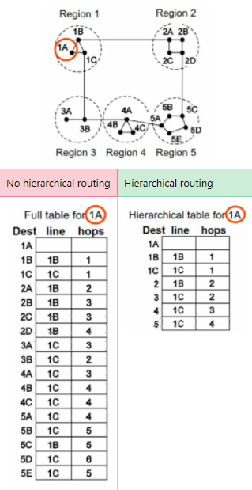

Routing Algorithms
Routing algorithms are responsible for deciding which output line an incoming packet should be transmitted on.
In other words, what path is best suited for the packet?
The best path is dependent on many factors, which the algorithms must take into account when choosing the best path for a particular packet.
The algorithms will fill in routing tables to document the process.
There are 2 types of routing algorithms:
- Adaptive Routing Algorithms - can change routing decisions depending on network topology and traffic
- Non-adaptive Routing Algorithms - makes routing decision and does not change it
Routing algorithms are dependent on 4 things:
- Topology - packet must be sent in the right direction
- Speed of interconnections - avoid slow lines
- Apparent load of target hosts - avoid slow machines
- Congestion - avoid busy routes
All routing algorithms have the following 3 properties:
- Robustness - must be able to cope with network changes, network topology changes, hosts going down or fluctuating traffic levels.
- Stability - converge to equilibrium.
- one of...
- Fairness - routers should have the same chance as getting traffic through them (ie. traffic shold be equally split among routers).
- Optimality - the router should transport a packet to the destination as quickly as possible.
Fairness and Optimality contradict each other. You can't have both at the same time.
Routing typically has 2 phases:
- Routing - routers exchange information to decide on best routes using routing tables.
- Forwading - when the packet arrives at the router we forward it to another router using forwarding tables.
Before we jump straight into the routing algorithms themselves, we need to go over some core concepts surrounding routing algorithms...
Flooding
Flooding is similar to broadcasting. You can visualise it like 'flooding' a network with loads of packets.
The algorithm sends every packet out onto every outgoing line (like broadcasting).
It does not send the packet back in the direction it came from.
The main problem with flooding is that it generates lots of duplicate packets.
We have 3 strategies to control flooding:
- Hop Counter (aka. Time To Live)
- The Hop Counter is initialised to the number of intermediate nodes in the network.
- It is decremented each time it gets to a new router (ie. each hop).
- if(hop_counter == 0) -> throw the packet away, it's been in the network for too long. Be gone demon-packet! Be gone!
- Use sequence numbers
- Watch each packet's sequence number and make sure that the same packet is not sent twice.
- Selective Flooding
- Broadcasting the packets to every router isn't necessary most of the time.
- To improve, we only send the packets to routers that are approximately in the right direction.
- Routers that are way behind or in a totally different direction to the current direction will not receive the packet.
Advantages of flooding:
- Very robust - if a large amount of routers were destroyed at once flooding could recover (useful in military applications for this reason!)
- Always chooses shortest path
- Good for small amounts of data
Disadvantages of flooding:
- Not practical in most applications
- Very bad for large amounts of data - the network will collapse if you try to send a 2MB file across the network.
The Optimality Principle
The most optimal route through a network.
It is a general statement about optimal routes, ignoring topology and traffic.
Figure 5.11a
As you can see in Figure 5.11a...
- The optimal path to get from I -> K is via I -> J -> B -> K
- Since J and B are on the same optimal path, J -> K and B -> K would follow the same route.
So what this principle tells us is that a node can determine its best route by learning its neighbours best route.
Link State Routing
Link State Routing (LSR) uses Dijkstra's Algorithm to build a routing table.
It uses Dijkstra's Algorithm because it knows the topology of the entire network.
LSR is an Adaptive Routing Algorithm.
LSR is an algorithm to find the shortest path in a network.
Fun fact: The OSPF algorithm (which is used in the Internet) is a variant of this LSR algorithm. Exciting!
Example 1
Example 2
Distance Vector Routing
Distance Vector Routing (DVR) is an Adaptive Routing Algorithm.
This means that DVR has no problems adding new routers to the network.
However this doesn't mean that DVR is good at removing routers.
DVR was used in the ARPANET, the predecessor to the Internet.
In the DVR algorithm, routers only know their neighbours. The routers do not necessarily understand the whole network at the beginning (ie. at round 1).
Count-To-Infinity (C2I)
A major concern that DVR has to deal with is the 'Count-to-infinity' (C2I) problem:
- DVR reacts rapidly to good news (new better route)
- DVR reacts slowly to bad news (best route goes downli>
- When a router goes down, the distance from all routers to it tends to infinity, increasing with each cycle.
- It will take lots of cycles before a router is declared unreachable.
- The amount of time it takes for a router to become unnreachable is called the 'Convergence time'.
- With good news, the delay between a router and its neighbor is only 1 (ie: good news travels fast)
- With bad news, the delay between a router and its neighbor propagates through the network and will diverge to infinity (ie: bad news travels slowly)
Solution to C2I problem:
- How do we solve the issue of bad news diverging to infinity?
- Set inf to a number...
- inf = 'longest path' + 1
- **also equivalent to**
- inf = 'number of routers'
- Whatever the number is, it will now represent the longest path in the network.
- If a routers counter reaches this number, it means that this router is no longer reachable.
- Therefore, every other router will delete the entry for this unreachable router.
DVR Example 1
Hierarchical Routing
The examples we have been doing have a small number of routers (between 4 and 6 routers).
But in reality most networks contain way more routers than this.
As networks grow in size, the routing tables grow proportionally.
Large routing tables are hard to manage, and could slow the network down because each router will have to do a tedious search on a very big table!
The obvious solution might be to split up this 1 really big routing table into separate sub-tables?
Generally, when you have a large network with lots of routers, you do this splitting into sub-tables using hierarchical routing.
- The routers are divided into regions.
- Each router knows all the details about how to route packets to destinations within its own region.
- Each router knows nothing about the internal structure of other regions.
For example, suppose we have the following network with 5 regions. I will do a routing table for region 1A using hierarchical routing, and not using hierarchical routing, because it is a lot easier to show it visually rather than trying to explain it in words:

Internetwork Routing
Just to recap what an Internetwork is... "An internetwork is a combination of multiple networks that use different technologies. They are connected using border routers"
To do routing in an internetwork, there are 2 levels to the routing algorithm:
- Within each network, an Interior Gateway Protocol (IGP) is used for routing.
- Across the networks that make up the Internet, and Exterior Gateway Protocol (EGP) is used.
- The networks in an internetwork can use different IGP's
- But the networks MUST use the same EGP.
Routing in the Internet
IGP
A common IGP distance vector protocol is the Open Shortest Path First (OSPF).
OSPF uses an LSR algorithm, and falls into the IGP group of protocols.
OSPF replaces an old distance vector protocol called the Routing Information Protocol (RIP).
RIP was not a great protocol because:
- it doesn't cope well with changes to network topology.
- used the hop counter to calculate distance between 2 routers.
OSPF is a great protocol because:
- dynamic to changes in network topology.
- can handle real-time traffic.
- does load balancing - splits load over multiple lines to prevent congestion.
- supports hierarchical routing.
- incorporates security measures - routers are vulnerable to attacks, but using a good protocol like OSPF you can mitigate security concerns.
EGP
The main Internet EGP distance vector protocol we use is the Border Gateway Protocol (BGP).
Here are the main things that all EGP's do:
- Politics - where in the world is the network traffic going? It may not allow local traffic to be routed through certain other networks or countries.
- BGP provides another solution to the C2I problem:
- Inform its neighbours about the paths it is using.
- It does this by exchanging the path to the destination. Then the destination knows where to route it!
Summary
LSR uses Dijkstra.
DVR uses flooding.
DVR doesn't use Dijkstra because it doesn't know the entire topology beforehand. Only its neighbours.
DVR suffers from the C2I problem.